Error function and related functions#
Error function, \(\mathrm{erf}(x)\)#
- ctx.erf(x)#
where
ctxismath53,mathc53,ctxboost,ctxflint.Returns the error function \(\displaystyle \mathrm{erf}(x) = \frac{2}{\sqrt \pi} \int_0^x \exp(-t^2) \mathrm{d}t\). See also BoostMath [94], BoostMath [74], Wikipedia [1229], MathWorld [839], NIST [771], Ehrhardt [295] (4.2.32), Flint [733], Flint [723], Mpmath [543].
This function returns the value of the error function defined by
\[\text{erf}(z) = \frac{2}{\sqrt{\pi}} \int_0^x e^{-z^2} \mathrm{d}t = \frac{2 z}{\sqrt{\pi}} {}_1F_1 \left(\tfrac{1}{2}, \tfrac{3}{2}, -z^2 \right).\]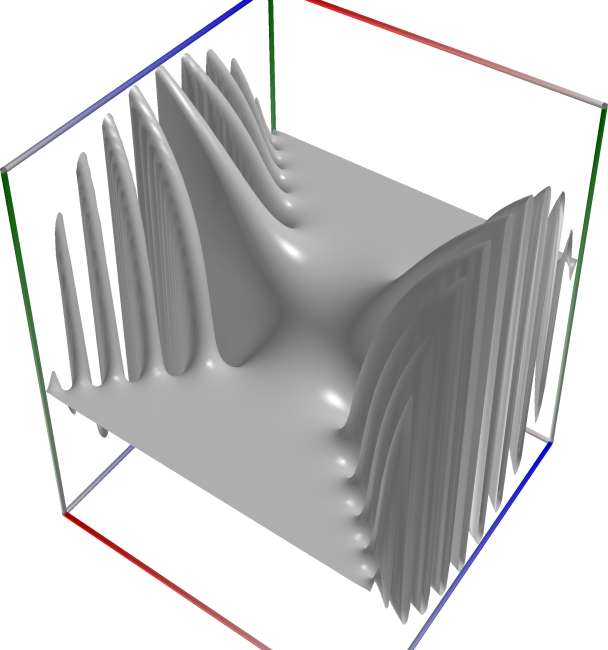
\(\quad\)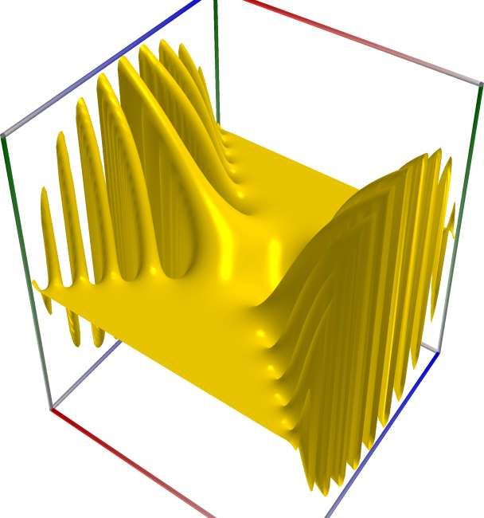
\(\quad\)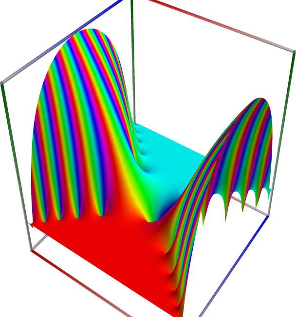
3D wpf plot: real part (left figure), imaginary part (middle figure) and absolute value with color-coded phase (right figure) of the complex sine function \(z = \sin(x + iy)\), with \(-6 \le x \le 6\) (blue axis), \(-6 \le y \le 6\) (red axis), \(-10 \le z \le 10\) (green axis). Function values are loglog-transformed.


An example with real input:
>>> from xlcalcnet import *
>>> x = 1.1; gui.setdps(90)
>>> for ctx in gui.ctxlist_noipm_real: print(ctx.fmtname + ': ' + ctx.fmt(ctx.erf(x)))
fpm: 0.880205069574082
mpm: 0.880205069574081699771867766321921039710883649905624744597066545655727724840183366219263161
dpm: 0.880205069574081699771867766321921039710883649905624744597066545655727724840183366219263161
gpm: 0.88020506957408169977186776632192103971088364990562474459706654565572772484018336621926316099
apm: [0.880205069574081699771867766321921039710883649905624744597066545655727724840183366219263161 +/- 6.83e-91]
math53: 0.880205069574082
sreal: 0.8802051
dreal: 0.880205069574082
ereal: 0.88020506957408169976
qreal: 0.880205069574081699771867766321921
oreal: 0.88020506957408169977186776632192103971088364990562474459706654565572773
mreal: 0.880205069574081699771867766321921039710883649905624744597066545655727724840183366219263162
sflint: 0.8802051
dflint: 0.880205069574082
eflint: 0.88020506957408169976
qflint: 0.880205069574081699771867766321921
oflint: 0.88020506957408169977186776632192103971088364990562474459706654565572772
mflint: 0.880205069574081699771867766321921039710883649905624744597066545655727724840183366219263161
aflint: [0.88020506957408169977186776632192103971088364990562474459706654565572772484018336621926316 +/- 2.04e-90]
An example with complex input, using C#-style formatting for complex numbers for the result
>>> from xlcalcnet import *
>>> x = -5.1+2j; gui.setdps(50)
>>> for ctx in [fpm, mpm, cmath53]: print(ctx.fmtname + ': ' + ctx.fmt(ctx.erf(x)))
fpm: (-1.00000000000944, 2.64656028632497E-11)
mpm: (-1.0000000000094422630570502807719890839561110733016, 0.000000000026465602863249675344542863217658653584114957674663)
cmath53: (-1.00000000000944, 2.64656028632497E-11)
An example with the same complex input as above, showing only the real part of the result:
>>> from xlcalcnet import *
>>> x = -5.1+2j; gui.setdps(90)
>>> for ctx in gui.ctxlist_noboost_cplx:
... print(ctx.fmtname + ': ' + ctx.realctx.fmt(ctx.real(ctx.erf(x))))
fpm: -1.00000000000944
mpm: -1.00000000000944226305705028077198908395611107330155843784780541305645815997010446616163383
dpm: -1.00000000000944226305705028077198908395611107330155843784780541305645815997010446616163383
gpm: -1.00000000000944226305705028077198908395611107330155843784780541305645815997010446616163383
apm: [-1.00000000000944226305705028077198908395611107330155843784780541305645815997010446616163383 +/- 1.81e-90]
cmath53: -1.00000000000944
sflintc: -1
dflintc: -1.00000000000944
eflintc: -1.0000000000094422631
qflintc: -1.00000000000944226305705028077199
oflintc: -1.0000000000094422630570502807719890839561110733015584378478054130564582
mflintc: -1.00000000000944226305705028077198908395611107330155843784780541305645815997010446616163383
aflintc: [-1.00000000000944226305705028077198908395611107330155843784780541305645815997010446616163383 +/- 4.24e-90]
An example with the same complex input as above, showing only the imaginary part of the result:
>>> from xlcalcnet import *
>>> x = -5.1+2j; gui.setdps(90)
>>> for ctx in gui.ctxlist_noboost_cplx:
... print(ctx.fmtname + ': ' + ctx.realctx.fmt(ctx.imag(ctx.erf(x))))
fpm: 2.64656028632497E-11
mpm: 0.0000000000264656028632496753445428632176586535841149576746620455204492437699185770538149480638383615
dpm: 2.64656028632496753445428632176586535841149576746620455204492437699185770538149480638383615E-11
gpm: 2.64656028632496753445428632176586535841149576746620455204492437699185770538149480638383615e-11
apm: [2.6465602863249675344542863217658653584114957674662045520449243769918577053814948e-11 +/- 3.84e-91]
cmath53: 2.64656028632497E-11
sflintc: 2.638269E-11
dflintc: 2.64656028632498E-11
eflintc: 2.6465602863249675371e-11
qflintc: 2.64656028632496753445428632176588e-11
oflintc: 2.64656028632496753445428632176586535841149576746620455204492437699e-11
mflintc: 2.64656028632496753445428632176586535841149576746620455204492437699185770538149480708464874E-11
aflintc: [2.646560286324967534454286321765865358411495767466204552044924376991857705381495e-11 +/- 3.21e-90]
The above and additional examples can be found online in the DataXlCalcNet repository or in the corresponding local DataXlCalcNet folder for Python (real input), Python (complex input), and C# (real or complex input).
Complementary error function, \(\mathrm{erfc}(x)\)#
- ctx.erfc(x)#
where
ctxismath53,mathc53,ctxboost,ctxflint.Returns the complementary error function \(\displaystyle \mathrm{erfc}(x) = 1-\mathrm{erf}(x) = \frac{2}{\sqrt \pi} \int_x^{\infty} \exp(-t^2)\, \mathrm{d}t\).
See also BoostMath [74], Wikipedia [1226], MathWorld [840], NIST [771], MathWorld [972], Ehrhardt [295] (3.3.5), Ehrhardt [295] (4.2.33), Mpmath [542].
Returns the value of the complementary error function defined by
\[\text{erfc}(x) = 1-\text{erfc}(x) = \frac{2}{\sqrt{\pi}} \int_x^\infty e^{-x^2} \mathrm{d}t,\]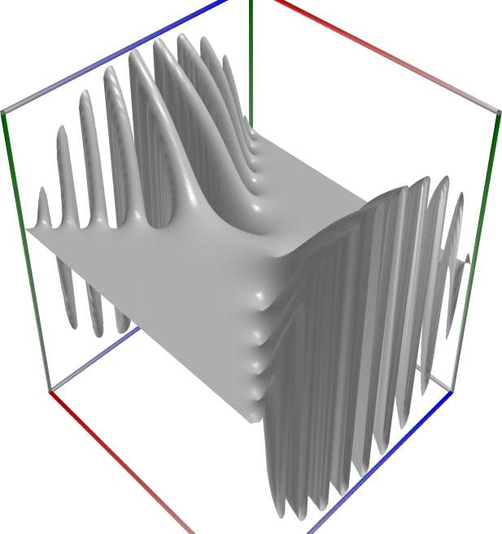
\(\quad\)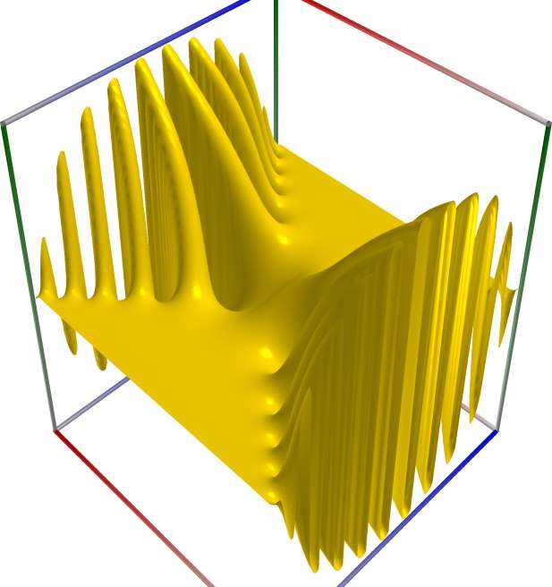
\(\quad\)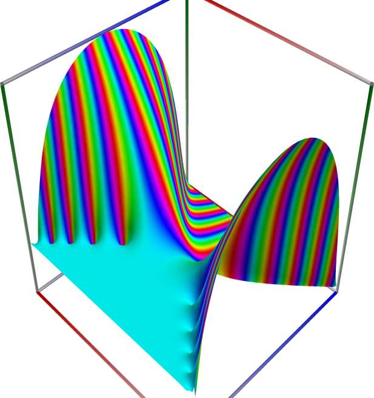
3D wpf plot: real part (left figure), imaginary part (middle figure) and absolute value with color-coded phase (right figure) of the complex sine function \(z = \sin(x + iy)\), with \(-6 \le x \le 6\) (blue axis), \(-6 \le y \le 6\) (red axis), \(-10 \le z \le 10\) (green axis). Function values are loglog-transformed.


An example with real input:
>>> from xlcalcnet import *
>>> x = 1.1; gui.setdps(90)
>>> for ctx in gui.ctxlist_noipm_real: print(ctx.fmtname + ': ' + ctx.fmt(ctx.erfc(x)))
fpm: 0.119794930425918
mpm: 0.119794930425918300228132233678078960289116350094375255402933454344272275159816633780736838
dpm: 0.119794930425918300228132233678078960289116350094375255402933454344272275159816633780736838
gpm: 0.119794930425918300228132233678078960289116350094375255402933454344272275159816633780736838
apm: [0.119794930425918300228132233678078960289116350094375255402933454344272275159816633780736838 +/- 5.60e-91]
math53: 0.119794930425918
sreal: 0.1197949
dreal: 0.119794930425918
ereal: 0.11979493042591830023
qreal: 0.119794930425918300228132233678079
oreal: 0.11979493042591830022813223367807896028911635009437525540293345434427227
mreal: 0.119794930425918300228132233678078960289116350094375255402933454344272275159816633780736838
sflint: 0.1197949
dflint: 0.119794930425918
eflint: 0.11979493042591830022
qflint: 0.119794930425918300228132233678079
oflint: 0.11979493042591830022813223367807896028911635009437525540293345434427227
mflint: 0.119794930425918300228132233678078960289116350094375255402933454344272275159816633780736838
aflint: [0.119794930425918300228132233678078960289116350094375255402933454344272275159816633780736838 +/- 4.67e-91]
An example with complex input, using C#-style formatting for complex numbers for the result
>>> from xlcalcnet import *
>>> x = -5.1+2j; gui.setdps(50)
>>> for ctx in [fpm, mpm, cmath53]: print(ctx.fmtname + ': ' + ctx.fmt(ctx.erfc(x)))
fpm: (2.00000000000944, -2.64656028632497E-11)
mpm: (2.0000000000094422630570502807719890839561110733016, -0.000000000026465602863249675344542863217658653584114957674663)
cmath53: (2.00000000000944, -2.64656028632497E-11)
An example with the same complex input as above, showing only the real part of the result:
>>> from xlcalcnet import *
>>> x = -5.1+2j; gui.setdps(90)
>>> for ctx in gui.ctxlist_noboost_cplx:
... print(ctx.fmtname + ': ' + ctx.realctx.fmt(ctx.real(ctx.erfc(x))))
fpm: 2.00000000000944
mpm: 2.00000000000944226305705028077198908395611107330155843784780541305645815997010446616163383
dpm: 2.00000000000944226305705028077198908395611107330155843784780541305645815997010446616163383
gpm: 2.00000000000944226305705028077198908395611107330155843784780541305645815997010446616163383
apm: [2.00000000000944226305705028077198908395611107330155843784780541305645815997010446616163383 +/- 2.55e-90]
cmath53: 2.00000000000944
sflintc: 2
dflintc: 2.00000000000944
eflintc: 2.0000000000094422632
qflintc: 2.00000000000944226305705028077199
oflintc: 2.0000000000094422630570502807719890839561110733015584378478054130564582
mflintc: 2.00000000000944226305705028077198908395611107330155843784780541305645815997010446616163383
aflintc: [2.00000000000944226305705028077198908395611107330155843784780541305645815997010446616163383 +/- 7.19e-90]
An example with the same complex input as above, showing only the imaginary part of the result:
>>> from xlcalcnet import *
>>> x = -5.1+2j; gui.setdps(90)
>>> for ctx in gui.ctxlist_noboost_cplx:
... print(ctx.fmtname + ': ' + ctx.realctx.fmt(ctx.imag(ctx.erfc(x))))
fpm: -2.64656028632497E-11
mpm: -0.0000000000264656028632496753445428632176586535841149576746620455204492437699185770538149480638383615
dpm: -2.64656028632496753445428632176586535841149576746620455204492437699185770538149480638383615E-11
gpm: -2.64656028632496753445428632176586535841149576746620455204492437699185770538149480638383615e-11
apm: [-2.6465602863249675344542863217658653584114957674662045520449243769918577053814948e-11 +/- 3.84e-91]
cmath53: -2.64656028632497E-11
sflintc: -2.638269E-11
dflintc: -2.64656028632498E-11
eflintc: -2.6465602863249675371e-11
qflintc: -2.64656028632496753445428632176588e-11
oflintc: -2.64656028632496753445428632176586535841149576746620455204492437699e-11
mflintc: -2.64656028632496753445428632176586535841149576746620455204492437699185770538149480708464874E-11
aflintc: [-2.646560286324967534454286321765865358411495767466204552044924376991857705381495e-11 +/- 3.21e-90]
The above and additional examples can be found online in the DataXlCalcNet repository or in the corresponding local DataXlCalcNet folder for Python (real input), Python (complex input), and C# (real or complex input).
Inverse of the real error function, \(\mathrm{erf}^{-1}(x)\)#
- ctx.erf_inv(q)#
where
ctxismath53,ctxcpp,ctxboostorctxflint.Returns the inverse of the real error function, satisfying \(\mathrm{erf}(\mathrm{erfinv}(x)) = \mathrm{erfinv}(\mathrm{erf}(x)) = x\). See also BoostMath [73], Wikipedia [1229], MathWorld [845], NIST [771], Flint [733], Mpmath [549].
This function is defined only for \(-1 \le x \le 1\).
An example:
>>> from xlcalcnet import *
>>> x = -0.1; gui.setdps(90)
>>> for ctx in gui.ctxlist_noipm_real: print(ctx.fmtname + ': ' + ctx.fmt(ctx.erf_inv(x)))
fpm: -0.0888559904942577
mpm: -0.0888559904942576870157372505677917775720522443331969037556287003827518010987074809418709434
dpm: -0.0888559904942576870157372505677917775720522443331969037556287003827518010987074809418709434
gpm: -0.088855990494257687015737250567791777572052244333196903755628700382751801098707480941870943403
apm: [-0.0888559904942576870157372505677917775720522443331969037556287003827518010987074809418709433 +/- 7.22e-92]
math53: -0.0888559904942577
sreal: -0.08885599
dreal: -0.0888559904942577
ereal: -0.088855990494257687029
qreal: -0.0888559904942576870157372505677918
oreal: -0.088855990494257687015737250567791777572052244333196903755628700382751801
mreal: -0.0888559904942576870157372505677917775720522443331969037556287003827518010987074809418709434
sflint: -0.08885599
dflint: -0.0888559904942577
eflint: -0.088855990494257687015
qflint: -0.0888559904942576870157372505677918
oflint: -0.088855990494257687015737250567791777572052244333196903755628700382751801
mflint: -0.0888559904942576870157372505677917775720522443331969037556287003827518010987074809418709433
aflint: [-0.0888559904942576870157372505677917775720522443331969037556287003827518010987074809418709433 +/- 8.46e-92]
The above and additional examples can be found online in the DataXlCalcNet repository or in the corresponding local DataXlCalcNet folder for Python (real input), and C# (real or complex input).
Inverse of the real complementory error function, \(\mathrm{erfc}^{-1}(x)\)#
- ctx.erfc_inv(q)#
where
ctxismath53,ctxcpp,ctxboostorctxflint.Returns the inverse of the real complementory error function, satisfying \(\mathrm{erfc}(\mathrm{erfcinv}(x)) = \mathrm{erfcinv}(\mathrm{erfc}(x)) = x\). See also BoostMath [73], Wikipedia [1226], MathWorld [846], NIST [771], Flint [733].
This function is defined only for \(0 \le x \le 2\).
An example:
>>> from xlcalcnet import *
>>> x = 1.5; gui.setdps(90)
>>> for ctx in gui.ctxlist_noipm_real: print(ctx.fmtname + ': ' + ctx.fmt(ctx.erfc_inv(x)))
mpm: -0.476936276204469873381418353643130559808969749059470644703882695919383447774646733488695916
dpm: -0.476936276204469873381418353643130559808969749059470644703882695919383447774646733488695916
gpm: -0.47693627620446987338141835364313055980896974905947064470388269591938344777464673348869591599
apm: [-0.476936276204469873381418353643130559808969749059470644703882695919383447774646733488695916 +/- 1.95e-91]
math53: -0.47693627620447
sreal: -0.4769363
dreal: -0.47693627620447
ereal: -0.47693627620446987333
qreal: -0.476936276204469873381418353643131
oreal: -0.47693627620446987338141835364313055980896974905947064470388269591938345
mreal: -0.476936276204469873381418353643130559808969749059470644703882695919383447774646733488695916
sflint: -0.4769363
dflint: -0.47693627620447
eflint: -0.47693627620446987339
qflint: -0.476936276204469873381418353643131
oflint: -0.47693627620446987338141835364313055980896974905947064470388269591938345
mflint: -0.476936276204469873381418353643130559808969749059470644703882695919383447774646733488695916
aflint: [-0.476936276204469873381418353643130559808969749059470644703882695919383447774646733488695916 +/- 4.40e-91]
The above and additional examples can be found online in the DataXlCalcNet repository or in the corresponding local DataXlCalcNet folder for Python (real input), and C# (real or complex input).
Standard normal density function \(\phi(x)\)#
- ctx.ndens(x)#
where
ctxismath53,ctxcpp,ctxboostorctxflint.Note: also ctx.erfZ(x), ctx.ndens(x), mathc53.Ndens(x)
Returns the Gaussian density function \(\displaystyle \phi(z) = \frac{1}{\sqrt {2\pi}} \exp(-z^2)\). See also: Ehrhardt [295] (3.3.12.3) and (3.9.28).
An example with real input:
>>> from xlcalcnet import *
>>> x = 1.1; gui.setdps(90)
>>> for ctx in gui.ctxlist_noipm_real: print(ctx.fmtname + ': ' + ctx.fmt(ctx.ndens(x)))
fpm: 0.217852177032551
mpm: 0.217852177032550531383124590270451141459733871878439189497759748657568703478463506092347696
dpm: 0.217852177032550531383124590270451141459733871878439189497759748657568703478463506092347696
gpm: 0.21785217703255053138312459027045114145973387187843918949775974865756870347846350609234769601
apm: [0.217852177032550531383124590270451141459733871878439189497759748657568703478463506092347696 +/- 5.61e-91]
math53: 0.21785217703255
sreal: 0.2178522
dreal: 0.217852177032551
ereal: 0.21785217703255053135
qreal: 0.217852177032550531383124590270451
oreal: 0.2178521770325505313831245902704511414597338718784391894977597486575687
mreal: 0.217852177032550531383124590270451141459733871878439189497759748657568703478463506092347696
sflint: 0.2178522
dflint: 0.21785217703255
eflint: 0.21785217703255053138
qflint: 0.217852177032550531383124590270451
oflint: 0.2178521770325505313831245902704511414597338718784391894977597486575687
mflint: 0.217852177032550531383124590270451141459733871878439189497759748657568703478463506092347696
aflint: [0.217852177032550531383124590270451141459733871878439189497759748657568703478463506092347696 +/- 8.03e-91]
An example with complex input, using C#-style formatting for complex numbers for the result
>>> from xlcalcnet import *
>>> x = -5.1+2j; gui.setdps(50)
>>> for ctx in [fpm, mpm, cmath53]: print(ctx.fmtname + ': ' + ctx.fmt(ctx.ndens(x)))
fpm: (-4.73542604579094E-06, -4.64001707909938E-06)
mpm: (-0.0000047354260457909432274099291434269745567261682153351, -0.0000046400170790993812817083010993148859985415001896239)
cmath53: (-4.73542604579095E-06, -4.64001707909939E-06)
An example with the same complex input as above, showing only the real part of the result:
>>> from xlcalcnet import *
>>> x = -5.1+2j; gui.setdps(90)
>>> for ctx in gui.ctxlist_noboost_cplx:
... print(ctx.fmtname + ': ' + ctx.realctx.fmt(ctx.real(ctx.ndens(x))))
fpm: -4.73542604579094E-06
mpm: -0.00000473542604579094322740992914342697455672616821533489833994197543804526928117922874211938176
dpm: -0.00000473542604579094322740992914342697455672616821533489833994197543804526928117922874211938176
gpm: -4.73542604579094322740992914342697455672616821533489833994197543804526928117922874211938176e-06
apm: [-4.7354260457909432274099291434269745567261682153348983399419754380452692811792287421193818e-6 +/- 5.32e-95]
cmath53: -4.73542604579095E-06
sflintc: -4.735429E-06
dflintc: -4.73542604579096E-06
eflintc: -4.7354260457909432304e-06
qflintc: -4.73542604579094322740992914342699e-06
oflintc: -4.7354260457909432274099291434269745567261682153348983399419754380452697e-06
mflintc: -4.73542604579094322740992914342697455672616821533489833994197543804526928117922874211938179E-06
aflintc: [-4.735426045790943227409929143426974556726168215334898339941975438045269281179228742119382e-6 +/- 2.96e-94]
An example with the same complex input as above, showing only the imaginary part of the result:
>>> from xlcalcnet import *
>>> x = -5.1+2j; gui.setdps(90)
>>> for ctx in gui.ctxlist_noboost_cplx:
... print(ctx.fmtname + ': ' + ctx.realctx.fmt(ctx.imag(ctx.ndens(x))))
fpm: -4.64001707909938E-06
mpm: -0.00000464001707909938128170830109931488599854150018962379570401069806589973568258879316871479603
dpm: -0.00000464001707909938128170830109931488599854150018962379570401069806589973568258879316871479603
gpm: -4.6400170790993812817083010993148859985415001896237957040106980658997356825887931687147960296e-06
apm: [-4.6400170790993812817083010993148859985415001896237957040106980658997356825887931687147960e-6 +/- 9.39e-95]
cmath53: -4.64001707909939E-06
sflintc: -4.640018E-06
dflintc: -4.64001707909939E-06
eflintc: -4.6400170790993812831e-06
qflintc: -4.64001707909938128170830109931489e-06
oflintc: -4.6400170790993812817083010993148859985415001896237957040106980658997359e-06
mflintc: -4.64001707909938128170830109931488599854150018962379570401069806589973568258879316871479604E-06
aflintc: [-4.640017079099381281708301099314885998541500189623795704010698065899735682588793168714796e-6 +/- 1.20e-94]
The above and additional examples can be found online in the DataXlCalcNet repository or in the corresponding local DataXlCalcNet folder for Python (real input), Python (complex input), and C# (real or complex input).
Standard normal cumulative distribution function \(\Phi(x)\)#
- ctx.ndis(x)#
where
ctxismath53,ctxcpp,ctxboostorctxflint.Note: also ctx.erfP(x), ctx.ndis(x), mathc53.Ndis(x)
Returns the integral \(\displaystyle \Phi(z) = \frac{1}{\sqrt 2\pi} \int_{-\infty}^z \exp(-t^2)\, \mathrm{d}t = \frac{1}{2} \mathrm{erfc}\left(-\frac{z}{\sqrt{2}} \right)\).
See also BoostMath [74], Wikipedia [1226], MathWorld [840], NIST [771], MathWorld [972], Ehrhardt [295] (3.3.12.1) and (3.9.28).
An example with real input:
>>> from xlcalcnet import *
>>> x = 1.1; gui.setdps(90)
>>> for ctx in gui.ctxlist_noipm_real: print(ctx.fmtname + ': ' + ctx.fmt(ctx.ndis(x)))
fpm: 0.864333939053617
mpm: 0.864333939053617324826942961973653039131309857939932761842400971830331126097789016906333524
dpm: 0.864333939053617324826942961973653039131309857939932761842400971830331126097789016906333524
gpm: 0.86433393905361732482694296197365303913130985793993276184240097183033112609778901690633352401
apm: [0.864333939053617324826942961973653039131309857939932761842400971830331126097789016906333524 +/- 7.56e-91]
math53: 0.864333939053617
sreal: 0.864334
dreal: 0.864333939053617
ereal: 0.86433393905361732487
qreal: 0.864333939053617324826942961973653
oreal: 0.86433393905361732482694296197365303913130985793993276184240097183033113
mreal: 0.864333939053617324826942961973653039131309857939932761842400971830331126097789016906333525
sflint: 0.8643339
dflint: 0.864333939053617
eflint: 0.86433393905361732482
qflint: 0.864333939053617324826942961973653
oflint: 0.86433393905361732482694296197365303913130985793993276184240097183033113
mflint: 0.864333939053617324826942961973653039131309857939932761842400971830331126097789016906333524
aflint: [0.86433393905361732482694296197365303913130985793993276184240097183033112609778901690633352 +/- 5.12e-90]
An example with complex input, using C#-style formatting for complex numbers for the result
>>> from xlcalcnet import *
>>> x = -5.1+2j; gui.setdps(50)
>>> for ctx in [fpm, mpm, cmath53]: print(ctx.fmtname + ': ' + ctx.fmt(ctx.ndis(x)))
fpm: (-5.05446702004577E-07, -1.06791715107987E-06)
mpm: (-0.00000050544670200457725188875090675566304926529527622396, -0.0000010679171510798681484358614442773123652470597326373)
cmath53: (-5.05446702004582E-07, -1.06791715107987E-06)
An example with the same complex input as above, showing only the real part of the result:
>>> from xlcalcnet import *
>>> x = -5.1+2j; gui.setdps(90)
>>> for ctx in gui.ctxlist_noboost_cplx:
... print(ctx.fmtname + ': ' + ctx.realctx.fmt(ctx.real(ctx.ndis(x))))
fpm: -5.05446702004577E-07
mpm: -0.000000505446702004577251888750906755663049265295276223963276282281088993770443542706867377448255
dpm: -5.05446702004577251888750906755663049265295276223963276282281088993770443542706867377448255E-7
gpm: -5.0544670200457725188875090675566304926529527622396327628228108899377044354270686737744825506e-07
apm: [-5.054467020045772518887509067556630492652952762239632762822810889937704435427068673774483e-7 +/- 5.65e-95]
cmath53: -5.05446702004582E-07
sflintc: -5.054471E-07
dflintc: -5.05446702004579E-07
eflintc: -5.0544670200457725231e-07
qflintc: -5.05446702004577251888750906755665e-07
oflintc: -5.0544670200457725188875090675566304926529527622396327628228108899377051e-07
mflintc: -5.05446702004577251888750906755663049265295276223963276282281088993770443542706867377448258E-07
aflintc: [-5.05446702004577251888750906755663049265295276223963276282281088993770443542706867377448e-7 +/- 3.12e-94]
An example with the same complex input as above, showing only the imaginary part of the result:
>>> from xlcalcnet import *
>>> x = -5.1+2j; gui.setdps(90)
>>> for ctx in gui.ctxlist_noboost_cplx:
... print(ctx.fmtname + ': ' + ctx.realctx.fmt(ctx.imag(ctx.ndis(x))))
fpm: -1.06791715107987E-06
mpm: -0.00000106791715107986814843586144427731236524705973263725456235096874101835650768895721352280719
dpm: -0.00000106791715107986814843586144427731236524705973263725456235096874101835650768895721352280719
gpm: -1.06791715107986814843586144427731236524705973263725456235096874101835650768895721352280719e-06
apm: [-1.0679171510798681484358614442773123652470597326372545623509687410183565076889572135228072e-6 +/- 2.40e-95]
cmath53: -1.06791715107987E-06
sflintc: -1.067918E-06
dflintc: -1.06791715107987E-06
eflintc: -1.0679171510798681489e-06
qflintc: -1.06791715107986814843586144427731e-06
oflintc: -1.0679171510798681484358614442773123652470597326372545623509687410183566e-06
mflintc: -1.0679171510798681484358614442773123652470597326372545623509687410183565076889572135228072E-06
aflintc: [-1.0679171510798681484358614442773123652470597326372545623509687410183565076889572135228072e-6 +/- 5.63e-95]
The above and additional examples can be found online in the DataXlCalcNet repository or in the corresponding local DataXlCalcNet folder for Python (real input), Python (complex input), and C# (real or complex input).
Standard normal quantile function \(\Phi^{-1}(q)\)#
- math53.ndisx(q)#
where
ctxismath53,ctxcpp,ctxboostorctxflint.Returns the standard normal quantile function \(\Phi^{-1}(q)\), defined as \(\displaystyle \Phi^{-1}(q) = -\sqrt{2} \: \mathrm{erfc\_inv}(2q)\).
See also BoostMath [74], Wikipedia [1226], MathWorld [840], NIST [771], MathWorld [972], Ehrhardt [295] (3.3.12.1) and (3.9.28).
An example:
>>> from xlcalcnet import *
>>> x = 0.1; gui.setdps(90)
>>> for ctx in gui.ctxlist_noipm_real: print(ctx.fmtname + ': ' + ctx.fmt(ctx.ndisx(x)))
fpm: -1.2815515655446
mpm: -1.28155156554460046696510332944874281861990782435258265970264823056570332481224543015543816
dpm: -1.28155156554460046696510332944874281861990782435258265970264823056570332481224543015543816
gpm: -1.2815515655446004669651033294487428186199078243525826597026482305657033248122454301554381601
apm: [-1.28155156554460046696510332944874281861990782435258265970264823056570332481224543015543816 +/- 1.92e-90]
math53: -1.2815515655446
sreal: -1.281551
dreal: -1.2815515655446
ereal: -1.281551565544600467
qreal: -1.28155156554460046696510332944874
oreal: -1.2815515655446004669651033294487428186199078243525826597026482305657033
mreal: -1.28155156554460046696510332944874281861990782435258265970264823056570332481224543015543816
sflint: -1.281551
dflint: -1.2815515655446
eflint: -1.281551565544600467
qflint: -1.28155156554460046696510332944874
oflint: -1.2815515655446004669651033294487428186199078243525826597026482305657033
mflint: -1.28155156554460046696510332944874281861990782435258265970264823056570332481224543015543816
aflint: [-1.28155156554460046696510332944874281861990782435258265970264823056570332481224543015543816 +/- 3.12e-90]
The above and additional examples can be found online in the DataXlCalcNet repository or in the corresponding local DataXlCalcNet folder for Python (real input), and C# (real or complex input).
Imaginary error function, \(\mathrm{erfi}(x)\)#
- ctx.erfi(x)#
where
ctxismath53,mathc53,ctxflint.Returns the imaginary error function \(\displaystyle \mathrm{erfi}(x) = \frac{2}{\sqrt \pi} \int_0^x \exp(t^2)\, \mathrm{d}t = \frac{1}{i} \text{erf}(ix) = \frac{2}{\sqrt \pi} e^{x^2} \mathrm{dawson}(x)\).
See also Wikipedia [1234], MathWorld [841], Ehrhardt [295] (3.3.8), Flint [733], Flint [723], Mpmath [544].
An example with real input:
>>> from xlcalcnet import *
>>> x = 1.1; gui.setdps(90)
>>> for ctx in gui.ctxlist_noboost_real: print(ctx.fmtname + ': ' + ctx.fmt(ctx.erfi(x)))
fpm: 1.99116724471952
mpm: 1.99116724471952456443910862239701075151106967971753460946808544145795473450608927220797008
dpm: 1.99116724471952456443910862239701075151106967971753460946808544145795473450608927220797008
gpm: 1.99116724471952456443910862239701075151106967971753460946808544145795473450608927220797008
apm: [1.99116724471952456443910862239701075151106967971753460946808544145795473450608927220797008 +/- 2.46e-90]
math53: 1.99116724471953
sflint: 1.991167
dflint: 1.99116724471952
eflint: 1.9911672447195245645
qflint: 1.99116724471952456443910862239701
oflint: 1.9911672447195245644391086223970107515110696797175346094680854414579548
mflint: 1.99116724471952456443910862239701075151106967971753460946808544145795473450608927220797008
aflint: [1.99116724471952456443910862239701075151106967971753460946808544145795473450608927220797008 +/- 3.12e-90]
An example with complex input, using C#-style formatting for complex numbers for the result
>>> from xlcalcnet import *
>>> x = -5.1+2j; gui.setdps(50)
>>> for ctx in [fpm, mpm, cmath53]: print(ctx.fmtname + ': ' + ctx.fmt(ctx.erfi(x)))
fpm: (-149140758.268261, 346797268.376746)
mpm: (-149140758.26826088460938839506206468905785681845233, 346797268.3767463042150444211546194213342876245887)
cmath53: (-149140758.268261, 346797268.376745)
An example with the same complex input as above, showing only the real part of the result:
>>> from xlcalcnet import *
>>> x = -5.1+2j; gui.setdps(90)
>>> for ctx in gui.ctxlist_noboost_cplx:
... print(ctx.fmtname + ': ' + ctx.realctx.fmt(ctx.real(ctx.erfi(x))))
fpm: -149140758.268261
mpm: -149140758.268260884609388395062064689057856818452327924685519448748023925133118377813000754
dpm: -149140758.268260884609388395062064689057856818452327924685519448748023925133118377813000754
gpm: -149140758.268260884609388395062064689057856818452327924685519448748023925133118377813000754
apm: [-149140758.26826088460938839506206468905785681845232792468551944874802392513311837781300075 +/- 8.44e-81]
cmath53: -149140758.268261
sflintc: -1.491408E+08
dflintc: -149140758.268261
eflintc: -149140758.26826088461
qflintc: -149140758.268260884609388395062065
oflintc: -149140758.26826088460938839506206468905785681845232792468551944874802392
mflintc: -149140758.268260884609388395062064689057856818452327924685519448748023925133118377813000754
aflintc: [-149140758.26826088460938839506206468905785681845232792468551944874802392513311837781300075 +/- 8.02e-81]
An example with the same complex input as above, showing only the imaginary part of the result:
>>> from xlcalcnet import *
>>> x = -5.1+2j; gui.setdps(90)
>>> for ctx in gui.ctxlist_noboost_cplx:
... print(ctx.fmtname + ': ' + ctx.realctx.fmt(ctx.imag(ctx.erfi(x))))
fpm: 346797268.376746
mpm: 346797268.376746304215044421154619421334287624588714359949356967742215982885435026342974234
dpm: 346797268.376746304215044421154619421334287624588714359949356967742215982885435026342974234
gpm: 346797268.37674630421504442115461942133428762458871435994935696774221598288543502634297423402
apm: [346797268.37674630421504442115461942133428762458871435994935696774221598288543502634297423 +/- 4.41e-81]
cmath53: 346797268.376745
sflintc: 3.467969E+08
dflintc: 346797268.376745
eflintc: 346797268.37674630387
qflintc: 346797268.376746304215044421154618
oflintc: 346797268.37674630421504442115461942133428762458871435994935696774221592
mflintc: 346797268.37674630421504442115461942133428762458871435994935696774221598288543502634297423
aflintc: [346797268.37674630421504442115461942133428762458871435994935696774221598288543502634297423 +/- 4.19e-81]
The above and additional examples can be found online in the DataXlCalcNet repository or in the corresponding local DataXlCalcNet folder for Python (real input), Python (complex input), and C# (real or complex input).
Dawson integral, \(F(x)\)#
- ctx.dawson(x)#
Returns the Dawson integral \(\displaystyle F(z) = e^{-z^2} \int_0^z e^{t^2} \mathrm{d}t = \frac{\sqrt{\pi}}{2} e^{-z^2} \mathrm{erfi}(z) = {\frac {i{\sqrt {\pi }}}{2}}\left[e^{-z^{2}}-w(z)\right]\).
See also Wikipedia [1333], MathWorld [968], Ehrhardt [295] (3.3.1), NIST [432].
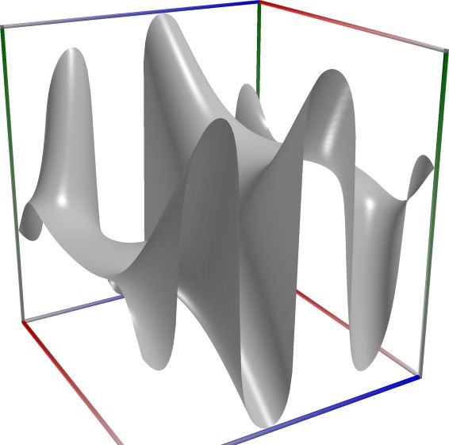
\(\quad\)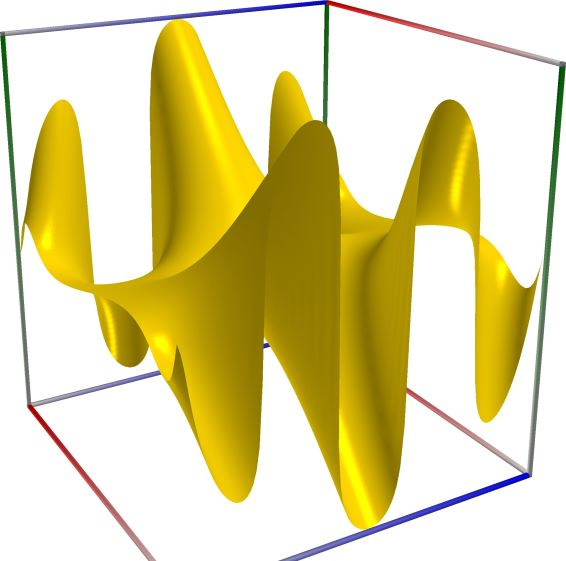
\(\quad\)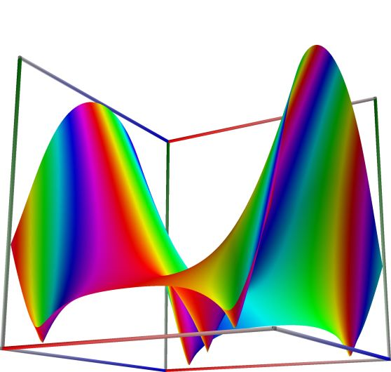
3D wpf plot: real part (left figure), imaginary part (middle figure) and absolute value with color-coded phase (right figure) of the complex sine function \(z = \sin(x + iy)\), with \(-6 \le x \le 6\) (blue axis), \(-6 \le y \le 6\) (red axis), \(-10 \le z \le 10\) (green axis). Function values are loglog-transformed.


An example with real input:
>>> from xlcalcnet import *
>>> x = 1.1; gui.setdps(90)
>>> for ctx in gui.ctxlist_noboost_real: print(ctx.fmtname + ': ' + ctx.fmt(ctx.dawson(x)))
fpm: 0.526206679970552
mpm: 0.526206679970552535679550815000248361244303743181748465541321507684404710786115371756566597
dpm: 0.526206679970552535679550815000248361244303743181748465541321507684404710786115371756566597
gpm: 0.52620667997055253567955081500024836124430374318174846554132150768440471078611537175656659694
apm: [0.52620667997055253567955081500024836124430374318174846554132150768440471078611537175656660 +/- 4.61e-90]
math53: 0.526206679970553
sflint: 0.5262067
dflint: 0.526206679970552
eflint: 0.52620667997055253567
qflint: 0.526206679970552535679550815000248
oflint: 0.52620667997055253567955081500024836124430374318174846554132150768440471
mflint: 0.526206679970552535679550815000248361244303743181748465541321507684404710786115371756566597
aflint: [0.52620667997055253567955081500024836124430374318174846554132150768440471078611537175656660 +/- 7.02e-90]
An example with complex input, using C#-style formatting for complex numbers for the result
>>> from xlcalcnet import *
>>> x = -5.1+2j; gui.setdps(50)
>>> for ctx in [fpm, mpm, cmath53]: print(ctx.fmtname + ': ' + ctx.fmt(ctx.dawson(x)))
fpm: (-0.085604040347639, -0.0347673447744042)
mpm: (-0.085604040347638985986196362454825290422507217783287, -0.034767344774404208948520706611153640468029114061042)
cmath53: (-0.0856040403476392, -0.0347673447744043)
An example with the same complex input as above, showing only the real part of the result:
>>> from xlcalcnet import *
>>> x = -5.1+2j; gui.setdps(90)
>>> for ctx in gui.ctxlist_noboost_cplx:
... print(ctx.fmtname + ': ' + ctx.realctx.fmt(ctx.real(ctx.dawson(x))))
fpm: -0.085604040347639
mpm: -0.0856040403476389859861963624548252904225072177832866616836252253309510651953760039624360779
dpm: -0.0856040403476389859861963624548252904225072177832866616836252253309510651953760039624360779
gpm: -0.085604040347638985986196362454825290422507217783286661683625225330951065195376003962436077898
apm: [-0.08560404034763898598619636245482529042250721778328666168362522533095106519537600396243608 +/- 4.46e-90]
cmath53: -0.0856040403476392
sflintc: -0.08560404
dflintc: -0.085604040347639
eflintc: -0.085604040347638985989
qflintc: -0.0856040403476389859861963624548253
oflintc: -0.085604040347638985986196362454825290422507217783286661683625225330951065
mflintc: -0.0856040403476389859861963624548252904225072177832866616836252253309510651953760039624360779
aflintc: [-0.08560404034763898598619636245482529042250721778328666168362522533095106519537600396243608 +/- 5.58e-90]
An example with the same complex input as above, showing only the imaginary part of the result:
>>> from xlcalcnet import *
>>> x = -5.1+2j; gui.setdps(90)
>>> for ctx in gui.ctxlist_noboost_cplx:
... print(ctx.fmtname + ': ' + ctx.realctx.fmt(ctx.imag(ctx.dawson(x))))
fpm: -0.0347673447744042
mpm: -0.0347673447744042089485207066111536404680291140610419448839989224210486525416516370983405824
dpm: -0.0347673447744042089485207066111536404680291140610419448839989224210486525416516370983405824
gpm: -0.034767344774404208948520706611153640468029114061041944883998922421048652541651637098340582398
apm: [-0.03476734477440420894852070661115364046802911406104194488399892242104865254165163709834058 +/- 4.43e-90]
cmath53: -0.0347673447744043
sflintc: -0.03476734
dflintc: -0.0347673447744042
eflintc: -0.034767344774404208948
qflintc: -0.0347673447744042089485207066111536
oflintc: -0.034767344774404208948520706611153640468029114061041944883998922421048652
mflintc: -0.0347673447744042089485207066111536404680291140610419448839989224210486525416516370983405824
aflintc: [-0.03476734477440420894852070661115364046802911406104194488399892242104865254165163709834058 +/- 4.68e-90]
The above and additional examples can be found online in the DataXlCalcNet repository or in the corresponding local DataXlCalcNet folder for Python (real input), Python (complex input), and C# (real or complex input).
Faddeeva function, \(w(z)\)#
- ctx.faddeeva(z)#
Returns the Faddeeva function function \(\displaystyle w(z):=e^{-z^{2}}\operatorname {erfc} (-iz)=\operatorname {erfcx} (-iz)=e^{-z^{2}}\left(1+{\frac {2i}{\sqrt {\pi }}}\int _{0}^{z}e^{t^{2}}{\text{d}}t\right)\).
See also Wikipedia [1316], NIST [433].
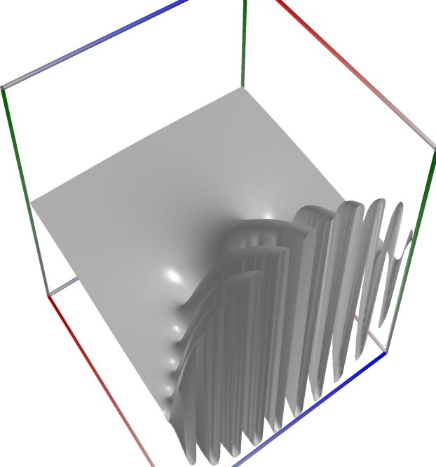
\(\quad\)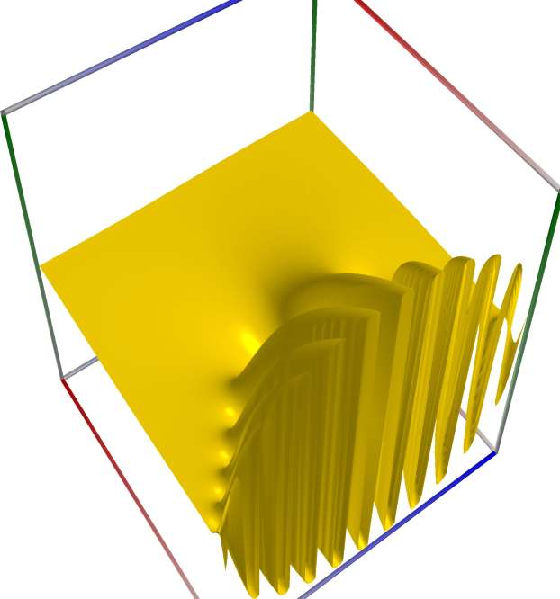
\(\quad\)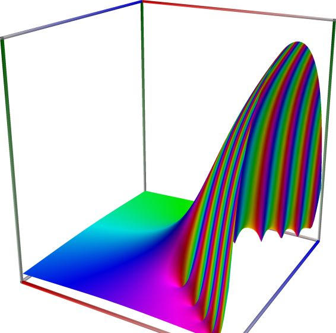
3D wpf plot: real part (left figure), imaginary part (middle figure) and absolute value with color-coded phase (right figure) of the complex sine function \(z = \sin(x + iy)\), with \(-6 \le x \le 6\) (blue axis), \(-6 \le y \le 6\) (red axis), \(-10 \le z \le 10\) (green axis). Function values are loglog-transformed.


An example with real input:
>>> from xlcalcnet import *
>>> x = 1.1; gui.setdps(40)
>>> for ctx in gui.ctxlist_noboost_real: print(ctx.fmtname + ': ' + ctx.cplxctx.fmt(ctx.faddeeva(x)))
fpm: (0.298197279429887, 0.593760655265267)
mpm: (0.2981972794298873779316009503759630713535, 0.5937606552652670091451691656162198664178)
dpm: (0.2981972794298873779316009503759630713535, 0.5937606552652670091451691656162198664178)
gpm: (0.298197279429887377931600950375963071353499, 0.593760655265267009145169165616219866417796)
apm: ([0.2981972794298873779316009503759630713535 +/- 6.68e-41], [0.593760655265267009145169165616219866418 +/- 3.29e-40])
math53: (0.298197279429887, 0.593760655265267)
sflint: (0.2981973, 0.5937607)
dflint: (0.298197279429887, 0.593760655265267)
eflint: (0.29819727942988737791, 0.59376065526526700914)
qflint: (0.298197279429887377931600950375963, 0.59376065526526700914516916561622)
oflint: (0.29819727942988737793160095037596307135352787123729458070929392167110105, 0.59376065526526700914516916561621986641778443746689671151275776609457304)
mflint: (0.2981972794298873779316009503759630713535, 0.5937606552652670091451691656162198664178)
aflint: ([0.298197279429887377931600950375963071353 +/- 6.31e-40], [0.593760655265267009145169165616219866418 +/- 8.74e-40])
An example with complex input, using C#-style formatting for complex numbers for the result
>>> from xlcalcnet import *
>>> x = -5.1+2j; gui.setdps(50)
>>> for ctx in [fpm, mpm, cmath53]: print(ctx.fmtname + ': ' + ctx.fmt(ctx.faddeeva(x)))
fpm: (0.0392307475442851, -0.0965938154713655)
mpm: (0.039230747544285060483465053624020302786390015594838, -0.096593815471365484518843838687952142329124058124224)
cmath53: (0.0392307475442851, -0.0965938154713657)
An example with the same complex input as above, showing only the real part of the result:
>>> from xlcalcnet import *
>>> x = -5.1+2j; gui.setdps(90)
>>> for ctx in gui.ctxlist_noboost_cplx:
... print(ctx.fmtname + ': ' + ctx.realctx.fmt(ctx.real(ctx.faddeeva(x))))
fpm: 0.0392307475442851
mpm: 0.0392307475442850604834650536240203027863900155948374427965621808173537066110130507916456183
dpm: 0.0392307475442850604834650536240203027863900155948374427965621808173537066110130507916456183
gpm: 0.039230747544285060483465053624020302786390015594837442796562180817353706611013050791645618297
apm: [0.03923074754428506048346505362402030278639001559483744279656218081735370661101305079164562 +/- 3.77e-90]
cmath53: 0.0392307475442851
sflintc: 0.03923075
dflintc: 0.0392307475442851
eflintc: 0.039230747544285060483
qflintc: 0.0392307475442850604834650536240203
oflintc: 0.039230747544285060483465053624020302786390015594837442796562180817353707
mflintc: 0.0392307475442850604834650536240203027863900155948374427965621808173537066110130507916456183
aflintc: [0.03923074754428506048346505362402030278639001559483744279656218081735370661101305079164562 +/- 4.14e-90]
An example with the same complex input as above, showing only the imaginary part of the result:
>>> from xlcalcnet import *
>>> x = -5.1+2j; gui.setdps(90)
>>> for ctx in gui.ctxlist_noboost_cplx:
... print(ctx.fmtname + ': ' + ctx.realctx.fmt(ctx.imag(ctx.faddeeva(x))))
fpm: -0.0965938154713655
mpm: -0.0965938154713654845188438386879521423291240581242232427780474282427971947978445514251785846
dpm: -0.0965938154713654845188438386879521423291240581242232427780474282427971947978445514251785846
gpm: -0.096593815471365484518843838687952142329124058124223242778047428242797194797844551425178584599
apm: [-0.09659381547136548451884383868795214232912405812422324277804742824279719479784455142517858 +/- 7.52e-90]
cmath53: -0.0965938154713657
sflintc: -0.09659382
dflintc: -0.0965938154713655
eflintc: -0.096593815471365484519
qflintc: -0.0965938154713654845188438386879521
oflintc: -0.096593815471365484518843838687952142329124058124223242778047428242797195
mflintc: -0.0965938154713654845188438386879521423291240581242232427780474282427971947978445514251785846
aflintc: [-0.09659381547136548451884383868795214232912405812422324277804742824279719479784455142517858 +/- 8.35e-90]
The above and additional examples can be found online in the DataXlCalcNet repository or in the corresponding local DataXlCalcNet folder for Python (real input), Python (complex input), and C# (real or complex input).
Fresnel sine integral, \(S(x)\)#
- ctx.fresnel_s(z)#
where
ctxismath53,mathc53,ctxflint.Returns the Fresnel sine integral \(\displaystyle S(x) = \int_0^x \sin\left(\frac{\pi t^2}{2}\right) \, \mathrm{d}t\).
See also Wikipedia [1317], MathWorld [976], NIST [773],, Ehrhardt [295] (3.3.14), Flint [733], Flint [723], Mpmath [652].
The complex Fresnel sine integral can be expressed using the error function as follows:
\[S(z) = \sqrt {\frac {\pi }{2}} {\frac {1+i}{4}}\left[ \operatorname{erf} \left({\frac {1+i}{\sqrt {2}}}z\right)-i \operatorname{erf} \left({\frac {1-i}{\sqrt {2}}}z\right)\right].\]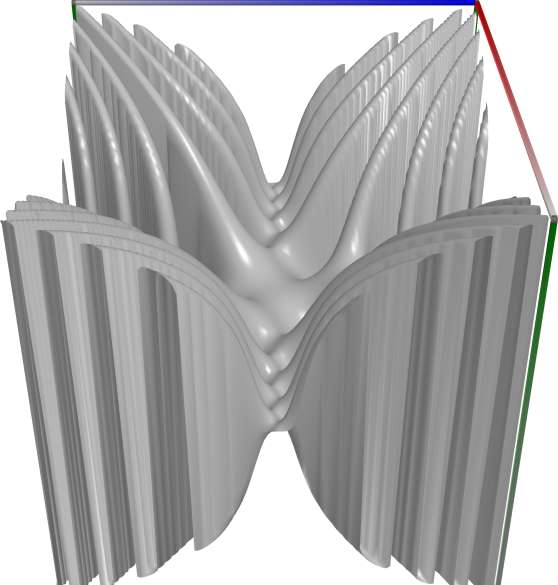
\(\quad\)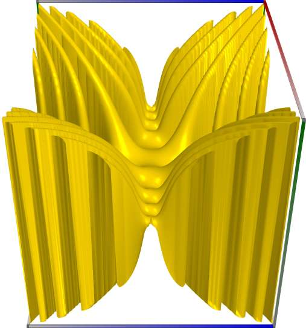
\(\quad\)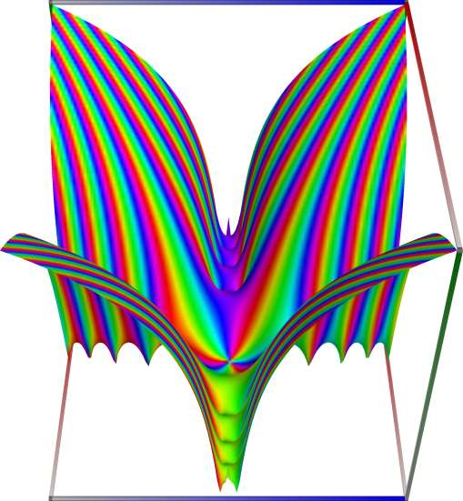
3D wpf plot: real part (left figure), imaginary part (middle figure) and absolute value with color-coded phase (right figure) of the complex sine function \(z = \sin(x + iy)\), with \(-6 \le x \le 6\) (blue axis), \(-6 \le y \le 6\) (red axis), \(-10 \le z \le 10\) (green axis). Function values are loglog-transformed.


An example with real input:
>>> from xlcalcnet import *
>>> x = 1.1; gui.setdps(90)
>>> for ctx in gui.ctxlist_noboost_real: print(ctx.fmtname + ': ' + ctx.fmt(ctx.fresnel_s(x)))
fpm: 0.53649791109682
mpm: 0.536497911096820434834597659213860671276625021658076851640652655207606365606621774440710426
dpm: 0.536497911096820434834597659213860671276625021658076851640652655207606365606621774440710426
gpm: 0.53649791109682043483459765921386067127662502165807685164065265520760636560662177444071042595
apm: [0.536497911096820434834597659213860671276625021658076851640652655207606365606621774440710426 +/- 5.66e-91]
math53: 0.53649791109682
sflint: 0.536498
dflint: 0.536497911096821
eflint: 0.53649791109682043488
qflint: 0.536497911096820434834597659213861
oflint: 0.53649791109682043483459765921386067127662502165807685164065265520760637
mflint: 0.536497911096820434834597659213860671276625021658076851640652655207606365606621774440710426
aflint: [0.536497911096820434834597659213860671276625021658076851640652655207606365606621774440710426 +/- 7.94e-91]
An example with complex input, using C#-style formatting for complex numbers for the result
>>> from xlcalcnet import *
>>> x = -5.1+2j; gui.setdps(50)
>>> for ctx in [fpm, mpm, cmath53]: print(ctx.fmtname + ': ' + ctx.fmt(ctx.fresnel_s(x)))
fpm: (-2241630287189.47, -898888649069.991)
mpm: (-2241630287189.4669569193282746154513160005124936257, -898888649069.99064867811158566165090421711719364843)
cmath53: (-2241630287189.47, -898888649069.962)
An example with the same complex input as above, showing only the real part of the result:
>>> from xlcalcnet import *
>>> x = -5.1+2j; gui.setdps(90)
>>> for ctx in gui.ctxlist_noboost_cplx:
... print(ctx.fmtname + ': ' + ctx.realctx.fmt(ctx.real(ctx.fresnel_s(x))))
fpm: -2241630287189.47
mpm: -2241630287189.46695691932827461545131600051249362567426466440306982049392887044651516224827
dpm: -2241630287189.46695691932827461545131600051249362567426466440306982049392887044651516224827
gpm: -2241630287189.4669569193282746154513160005124936256742646644030698204939288704465151622482699
apm: [-2241630287189.466956919328274615451316000512493625674264664403069820493928870446515162248 +/- 3.60e-76]
cmath53: -2241630287189.47
sflintc: -2.24163E+12
dflintc: -2241630287189.47
eflintc: -2241630287189.4669571
qflintc: -2241630287189.46695691932827461545
oflintc: -2241630287189.4669569193282746154513160005124936256742646644030698204939
mflintc: -2241630287189.46695691932827461545131600051249362567426466440306982049392887044651516224827
aflintc: [-2241630287189.466956919328274615451316000512493625674264664403069820493928870446515162248 +/- 3.46e-76]
An example with the same complex input as above, showing only the imaginary part of the result:
>>> from xlcalcnet import *
>>> x = -5.1+2j; gui.setdps(90)
>>> for ctx in gui.ctxlist_noboost_cplx:
... print(ctx.fmtname + ': ' + ctx.realctx.fmt(ctx.imag(ctx.fresnel_s(x))))
fpm: -898888649069.991
mpm: -898888649069.99064867811158566165090421711719364860844779242478274355015892273595038358263
dpm: -898888649069.99064867811158566165090421711719364860844779242478274355015892273595038358263
gpm: -898888649069.99064867811158566165090421711719364860844779242478274355015892273595038358262997
apm: [-898888649069.990648678111585661650904217117193648608447792424782743550158922735950383583 +/- 5.02e-76]
cmath53: -898888649069.962
sflintc: -8.988847E+11
dflintc: -898888649069.976
eflintc: -898888649069.99064511
qflintc: -898888649069.990648678111585661638
oflintc: -898888649069.99064867811158566165090421711719364860844779242478274354958
mflintc: -898888649069.990648678111585661650904217117193648608447792424782743550158922735950383582588
aflintc: [-898888649069.9906486781115856616509042171171936486084477924247827435501589227359503835826 +/- 8.74e-77]
The above and additional examples can be found online in the DataXlCalcNet repository or in the corresponding local DataXlCalcNet folder for Python (real input), Python (complex input), and C# (real or complex input).
Fresnel cosine integral, \(C(x)\)#
- ctx.fresnel_c(z)#
where
ctxismath53,mathc53,ctxflint.Returns the Fresnel cosine integral \(\displaystyle C(x) = \int_0^x \cos\left(\frac{\pi t^2}{2}\right) \, \mathrm{d}t\).
See also Wikipedia [1317], MathWorld [975], NIST [773], Ehrhardt [295] (3.3.14), Flint [733], Flint [723], Mpmath [651].
The complex Fresnel cosine integral can be expressed using the error function as follows:
\[C(z) = \sqrt {\frac {\pi }{2}} {\frac {1-i}{4}}\left[ \operatorname{erf} \left({\frac {1+i}{\sqrt {2}}}z\right)+i \operatorname{erf} \left({\frac {1-i}{\sqrt {2}}}z\right)\right].\]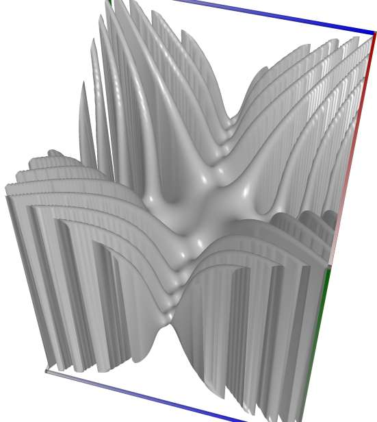
\(\quad\)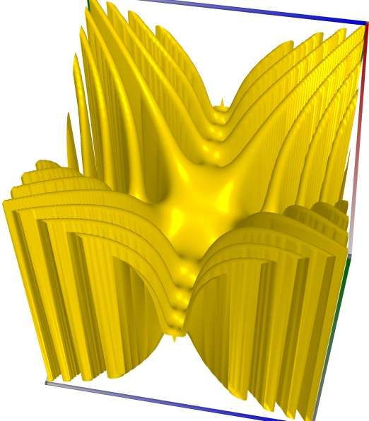
\(\quad\)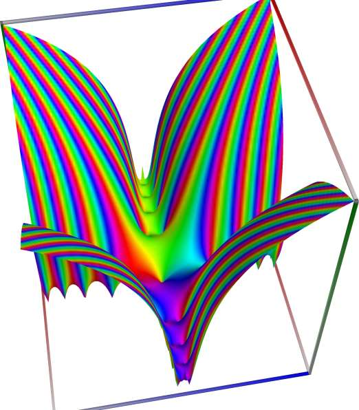
3D wpf plot: real part (left figure), imaginary part (middle figure) and absolute value with color-coded phase (right figure) of the complex sine function \(z = \sin(x + iy)\), with \(-6 \le x \le 6\) (blue axis), \(-6 \le y \le 6\) (red axis), \(-10 \le z \le 10\) (green axis). Function values are loglog-transformed.


An example with real input:
>>> from xlcalcnet import *
>>> x = 1.1; gui.setdps(90)
>>> for ctx in gui.ctxlist_noboost_real: print(ctx.fmtname + ': ' + ctx.fmt(ctx.fresnel_c(x)))
fpm: 0.763806666062012
mpm: 0.763806666062011990726130009284672246299427343072069668019880612138564734643306302744275911
dpm: 0.763806666062011990726130009284672246299427343072069668019880612138564734643306302744275911
gpm: 0.76380666606201199072613000928467224629942734307206966801988061213856473464330630274427591095
apm: [0.763806666062011990726130009284672246299427343072069668019880612138564734643306302744275911 +/- 7.14e-91]
math53: 0.763806666062012
sflint: 0.7638066
dflint: 0.763806666062012
eflint: 0.76380666606201199069
qflint: 0.763806666062011990726130009284672
oflint: 0.76380666606201199072613000928467224629942734307206966801988061213856473
mflint: 0.763806666062011990726130009284672246299427343072069668019880612138564734643306302744275911
aflint: [0.763806666062011990726130009284672246299427343072069668019880612138564734643306302744275911 +/- 9.12e-91]
An example with complex input, using C#-style formatting for complex numbers for the result
>>> from xlcalcnet import *
>>> x = -5.1+2j; gui.setdps(50)
>>> for ctx in [fpm, mpm, cmath53]: print(ctx.fmtname + ': ' + ctx.fmt(ctx.fresnel_c(x)))
fpm: (898888649069.491, -2241630287188.97)
mpm: (898888649069.49064867811158541181942378510204012082, -2241630287188.9669569193282739626828575839669304286)
cmath53: (898888649069.462, -2241630287188.97)
An example with the same complex input as above, showing only the real part of the result:
>>> from xlcalcnet import *
>>> x = -5.1+2j; gui.setdps(90)
>>> for ctx in gui.ctxlist_noboost_cplx:
... print(ctx.fmtname + ': ' + ctx.realctx.fmt(ctx.real(ctx.fresnel_c(x))))
fpm: 898888649069.491
mpm: 898888649069.490648678111585411819423785102040120996552545848384444379006842684444838383967
dpm: 898888649069.490648678111585411819423785102040120996552545848384444379006842684444838383967
gpm: 898888649069.49064867811158541181942378510204012099655254584838444437900684268444483838396698
apm: [898888649069.490648678111585411819423785102040120996552545848384444379006842684444838384 +/- 1.65e-76]
cmath53: 898888649069.462
sflintc: 8.988847E+11
dflintc: 898888649069.476
eflintc: 898888649069.49064511
qflintc: 898888649069.490648678111585411807
oflintc: 898888649069.49064867811158541181942378510204012099655254584838444437843
mflintc: 898888649069.490648678111585411819423785102040120996552545848384444379006842684444838383926
aflintc: [898888649069.490648678111585411819423785102040120996552545848384444379006842684444838384 +/- 1.50e-76]
An example with the same complex input as above, showing only the imaginary part of the result:
>>> from xlcalcnet import *
>>> x = -5.1+2j; gui.setdps(90)
>>> for ctx in gui.ctxlist_noboost_cplx:
... print(ctx.fmtname + ': ' + ctx.realctx.fmt(ctx.imag(ctx.fresnel_c(x))))
fpm: -2241630287188.97
mpm: -2241630287188.96695691932827396268285758396693042858192446753053104743417499451447342877562
dpm: -2241630287188.96695691932827396268285758396693042858192446753053104743417499451447342877562
gpm: -2241630287188.9669569193282739626828575839669304285819244675305310474341749945144734287756199
apm: [-2241630287188.966956919328273962682857583966930428581924467530531047434174994514473428776 +/- 4.73e-76]
cmath53: -2241630287188.97
sflintc: -2.24163E+12
dflintc: -2241630287188.97
eflintc: -2241630287188.9669571
qflintc: -2241630287188.96695691932827396268
oflintc: -2241630287188.9669569193282739626828575839669304285819244675305310474342
mflintc: -2241630287188.96695691932827396268285758396693042858192446753053104743417499451447342877562
aflintc: [-2241630287188.9669569193282739626828575839669304285819244675305310474341749945144734287756 +/- 9.52e-77]
The above and additional examples can be found online in the DataXlCalcNet repository or in the corresponding local DataXlCalcNet folder for Python (real input), Python (complex input), and C# (real or complex input).
Owen’s T function, \(T(h,a)\)#
- ctx.owen_t(h, a)#
where
ctxismath53orctxflint.Returns Owen’s T function \(\displaystyle T(h,a) = \frac {1}{2\pi } \int _{0}^{a} f(x) \mathrm{d}x = \frac {a}{4\pi } \int _{-1}^{1} f(ax) \mathrm{d}x, \quad f(x) = {\frac {e^{-{\frac {1}{2}}h^{2}(1+x^{2})}}{1+x^{2}}}, \quad \left(-\infty <h,a<+\infty \right)\).
See also Owen [451], and Patefield and Tand [461], Wikipedia [1347], MathWorld [1008], Ehrhardt [295] (3.3.17).
3D wpf plot: real part (left figure), imaginary part (middle figure) and absolute value with color-coded phase (right figure) of the complex sine function \(z = \sin(x + iy)\), with \(-6 \le x \le 6\) (blue axis), \(-6 \le y \le 6\) (red axis), \(-10 \le z \le 10\) (green axis). Function values are loglog-transformed.

An example with real input:
>>> from xlcalcnet import *
>>> h = 1.1; a = 4.1; gui.setdps(90)
>>> for ctx in gui.ctxlist_boost_real: print(ctx.fmtname + ': ' + ctx.fmt(ctx.owen_t(h, a)))
fpm: 0.0678329971814626
mpm: 0.0678329971814625705858335149926339769609965607463056378068941578365121446402784725988934391
dpm: 0.0678329971814625705858335149926339769609965607463056378068941578365121446402784725988934391
gpm: 0.0678329971814625705858335149926339769609965607463056378068941578365121446402784725988934391
apm: [0.0678329971814625705858335149926339769609965607463056378068941578365121446402784725988934391 +/- 3.03e-92]
math53: 0.0678329971814625
sreal: 0.06783299
dreal: 0.0678329971814626
ereal: 0.067832997181462570596
qreal: 0.067832997181462570585833514992634
oreal: 0.067832997181462570585833514992633976960996560746305637806894157836512145
mreal: 0.0678329971814625705858335149926339769609965607463056378068941578365121446402784725988934391
The above and additional examples can be found online in the DataXlCalcNet repository or in the corresponding local DataXlCalcNet folder for Python (real input), Python (complex input), and C# (real or complex input).